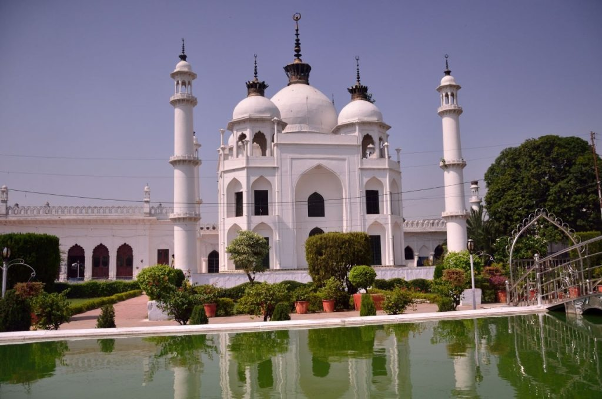

Standing alone in a narrow passage, I am lost wondering which of the dark mysterious paths in front of me would lead me to my destination. The voices echo around me but I cannot see anyone. Behind me is a corridor that opens to a door that takes me to another corridor with a door. I look around me and I see no one. All of a sudden, I hear a familiar voice and my guide emerges out of a dark corner. For a moment I realized that I was almost close to being lost in a labyrinth with 1000 passages and 489 doorways that clone each other – the famous Bhool Bhulaiya of the Bara Imambara in Lucknow in Uttar Pradesh.
If there is one monument in Lucknow that fills me in awe then it is the Bara Imambara. But it is the story behind it that leaves me even more speechless. We go back in time to the 18th century – 1784 to be precise when Awadh province was ravaged by a famine. The Nawab of Awadh, Asaf ud Daula hit upon an idea to find employment for his starving populace, both the rich and the poor. And that is how the Bara Imambara was born – it was neither a mosque nor a mausoleum but was meant to be a prayer hall where the Shia Muslim community could congregate for mourning during Muharram.
The work on this historic edifice began. While the labourers worked brick by brick every morning building the monument, the elite would start their work at night, tearing down the entire structure, and razing it to the ground. The cycle continued for eleven years until the monument called Asafi Imambara or the Bara Imambara was completed. Over 20000 people worked on this project which was based on the design of a Delhi-based architect, Kifayatullah who won the project through a competition.

It is a bright and sunny day as we walk past the two imposing gateways that lead you through mosques, step wells, courtyards, and landscaped gardens to the main central hall. The first thing that you see is the absence of beams supporting the large hall measuring over 50 by 16 meters, which is over 15 meters in height. There are three halls here and chandeliers hang from the ceiling creating an ornate look.
My guide says that this is the largest arched hall in the world built without pillars to support it. And the Bhool Bhulaiya of Bara Imambara was designed by the architect to ensure that the monument did not need pillars, by reducing the weight of the ceiling and making it hollow.
And it eventually became the showstopper. If you are without a guide, you can lose your sense of direction as every passage and door in this labyrinth clones each other. It is believed that there are underground tunnels leading to cities but they have been sealed by the British.
Finally, we are at the rooftop taking in the entire view of the complex. The Asafi Mosque stands adjacent and I can see the Shahi Baoli. There are stories everywhere. One of them speaks about how one of the treasurers of a Nawab had jumped into the well so that the British would not capture him. The shutterbugs are active taking photographs of every view. Inspired by a combination of Persian and Mughal architecture, the Bara Imambara cocoons you into a world, away from the chaos of the old town.
Wading through the old town of Lucknow, we cross the Rumi Darwaza built by the same Nawab during the famine. The 60-foot-tall gate resembles an old doorway in Turkey and is referred to as the Turkish gate. We barely linger as traffic piles up and the sun’s harsh rays strike us. Our next destination is the Chota Imambara which goes by the name of Husainabad Imambara built by the Nawab, Mohabbat Ali Shah who is buried here with his mother.
A study in contrast, the Chota Imambara as the name suggests is not just small but a petite monument that bursts into opulence the moment you enter it. Entering through the gates called Naubat Khana, we see a beautiful hall filled with chandeliers and clocks from Belgium and Paris. Every corner of the hall glitters with these lovely lanterns and the British called it “Palace of Lights.”
The facade and the walls are very beautifully decorated with Quranic verses in Islamic calligraphy. There is a mosque, a mausoleum, and a hammam in this complex. Looking up you can see a gilded dome and several minarets. There was meant to be a seven-storeyed tower called Satkhanda, but you can see only four levels as construction was stopped after the reign of the Nawan. It was meant to be a watch tower and a spiral staircase takes you up the tower. There is also a Treasury built right in front of the tomb. The entire Imambara is so serene that I sit there for a long time, imbibing the beauty and the peaceful atmosphere until it is time to move on.